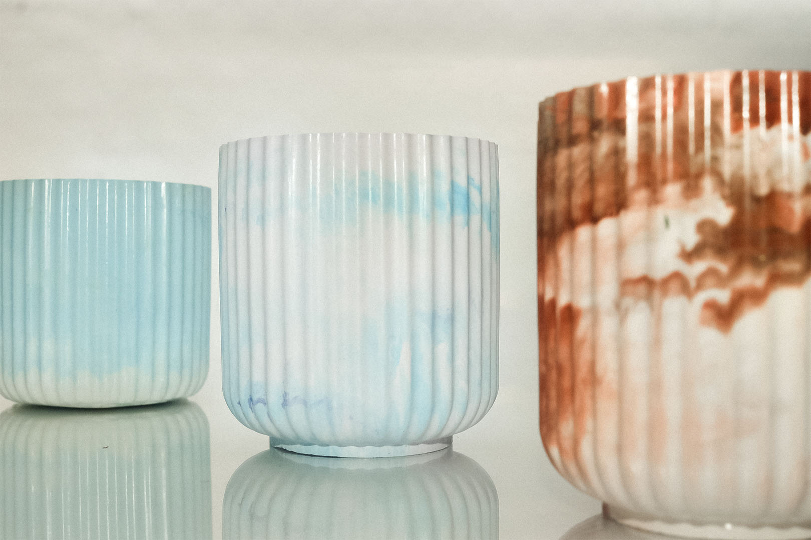
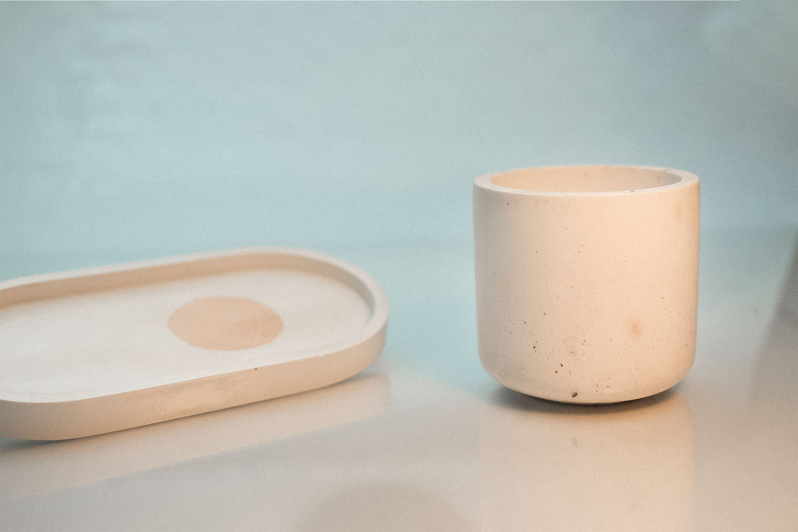
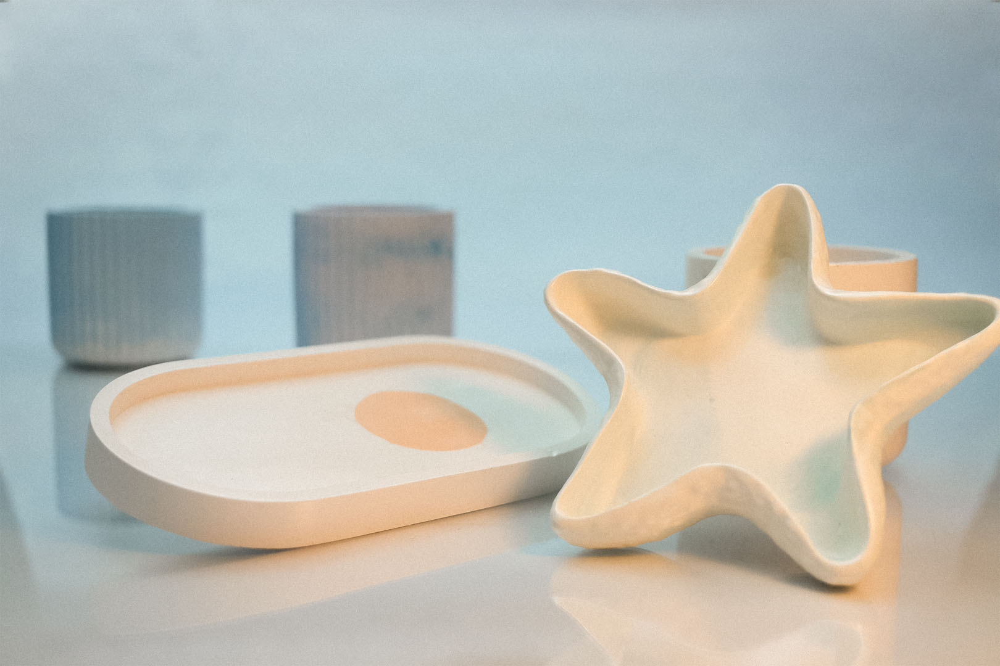
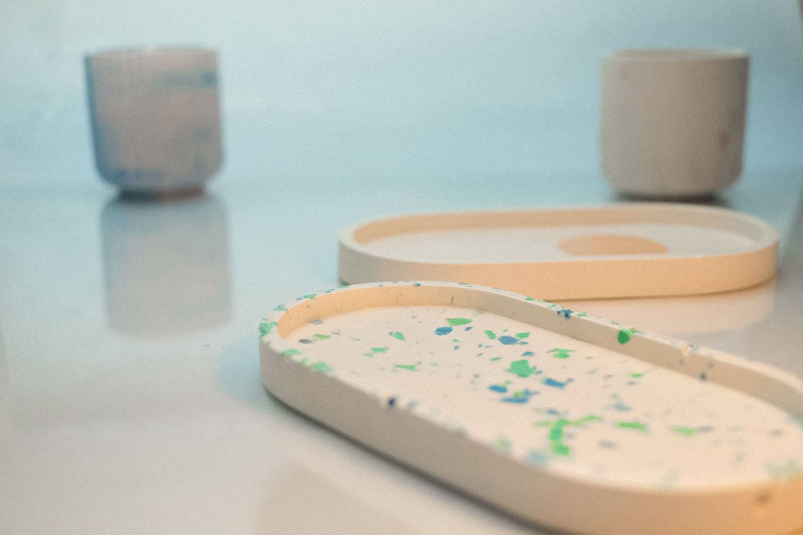
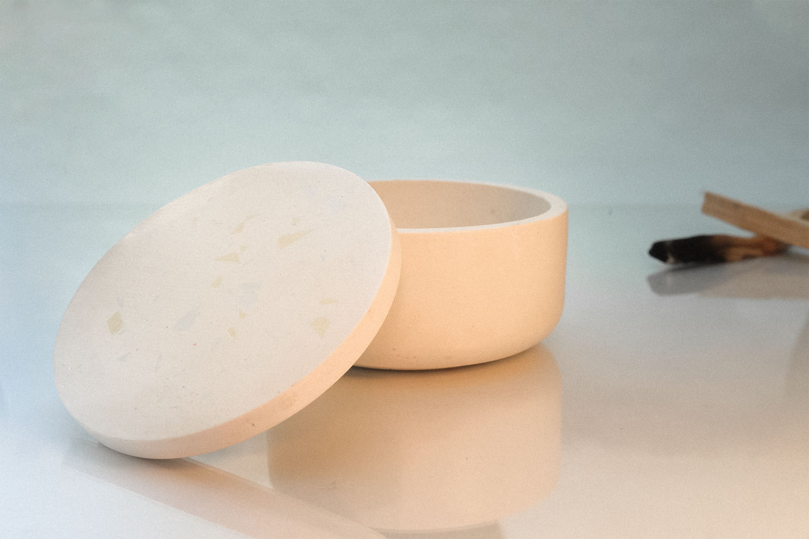
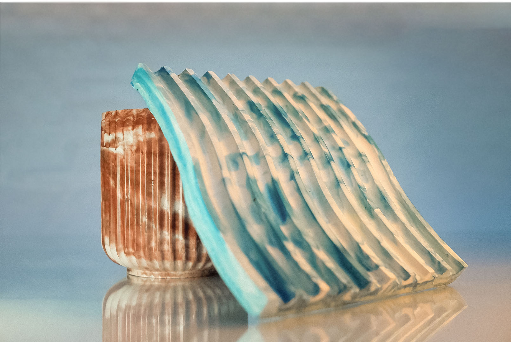

Najpierw jest jedwab. W całej swojej wybredności sam prowadzi przez proces, delikatnie opływa dłonie, a potem w kilka sekund zmienia swój wygląd.


Później powstaje farba. Kolor nigdy nie jest przypadkiem, zawsze wynika z Uniesienia, a najdoskonalsze Uniesienia daje natura. Dlatego kolory czerpią inspirację z motyli, marmuru, krajobrazu.
Jedwab zatapia się w farbie, momentalnie chłonąc barwy w cienkie włókna. Wzór utrwala się na stałe w strukturze materiału.


Tak powstaje 8 chust o niepowtarzalnym wzorze, którego nie da się odtworzyć. Mistrzowie ebru setki lat temu używali tej metody na dokumentach królewskich, nikt nie był w stanie ich podrobić. Tak samo tutaj, nie jest możliwe, by powstały dwie jednakowe chusty.
Najważniejsze, by piękno odbite na wodzie odnalazło swoje odbicie w Twoim pięknie. Rozlało się we włosach, zdobiło szyję, aby ilość piękna w świecie stawała się coraz większa.

I nic więcej.